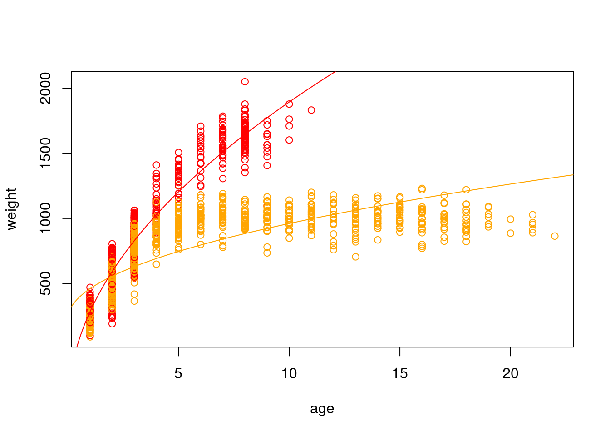
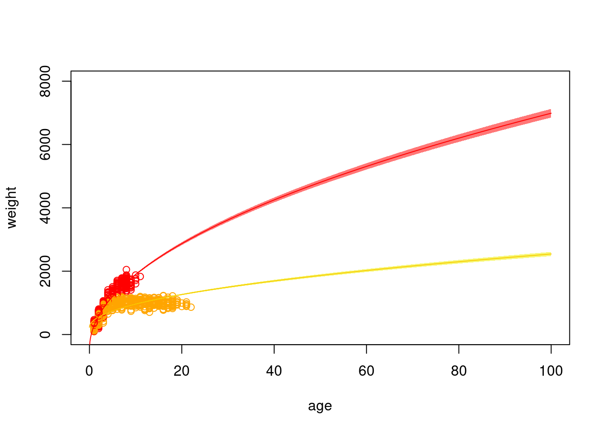

Linear models are the bread and butter of ecological modeling. If you can fit a linear model, you can satisfactorily answer probably over 90% of the types of questions ecologists are interested in. They also include the basic building structures for almost all types of models in ecology, and the skills you would need to learn other ones, so this is why we will spend two weeks covering them.
6.1 Algebraic linear functions
There are a few important things to remember from your first algebra class that will be important for linear models.
Remember that we can represent a straight line in slope-intercept form as \(y = mx + b\), where \(m\) is the slope of the line and \(b\) is the intercept. The intercept, \(b\) is where the line hits the y-axis, in other words, it is the value of \(y\) when \(x=0\). For every one unit increase in \(x\), we except an \(m\) unit increase in \(y\).
We represent the relationship between \(x\) and \(y\) in a Cartesian plane, where the \(x\) axis is horizontal and the \(y\) axis is vertical (and we are only operating in two dimensions).
In a function, no single \(x\) value as input can have two different \(y\) values as output. In other words, a function can never double back on itself / overlap vertically. If you know \(x\), you know \(y\) - there is no possibility of a different \(y\) associated with a single \(y\). The same \(y\) value can be the output of multiple different \(x\) input values, though.
Functional cows
Non-functional cow, input of x = 1 leads to y = 1.5 and y = -4
Normal linear functions are continuous with no break points / gaps. There are piecewise functions over which there are ranges of \(x\) values that there can be no \(y\) values, but these are not the norm. For this class, we are only going to use normal linear functions that are not piece-wise. If you’re interested in piece-wise type questions, you might also be interested in hurdle models.
Note on terminology. Some people refer to variable(s) on the x-axis as the independent variable and the variable on the y-axis as the dependent variable because y depends on x. This is confusing, however, and also implies that there is a strongly causal relationship between x and y. I, and many others, prefer the terms predictor for the x-axis variable(s), and response for the y-axis variable because these terms are much clearer for communicating your model structure.
6.2 Assumptions of linear models
All models have assumptions. These are conditions that should be met by your model in order for you to trust the inference you make based on it. If these assumptions are not met, take your model outputs with a grain of salt (or don’t believe them, depending on how badly you don’t meet the assumptions!).
It makes biological sense. This is the single most important assumption of your model. Your predictors must make sense in how they relate to your response variable, your underlying deterministic component is sensible, and you have a biological hypothesis or explanation for why you are using this model structure.
The effects are additive. In our simple model, the response variable is the sum of the intercept (\(b\)) and the slope (\(m\)) times the value of \(x\), not the product of the two, or \(m\) as a function of \(x\), etc. The effects are additive because they are separate and the sum of the effects results in the deterministic estimate.
Effects are linear. This does not mean that everything needs to be a straight line! But the function does need to be linear.
# Let's explore some linear functionsx <-seq(-10, 10, by=0.1)plot(x ~ x, type="l")
Warning in plot.formula(x ~ x, type = "l"): the formula 'x ~ x' is treated as
'x ~ 1'
plot(x^(1/2) ~ x, type="l")
plot(x^2~x, type="l")
plot(x^3~ x, type="l")
plot(x^4~ x, type="l")
plot(x^5~ x, type="l")
plot(x/(1-x) ~ x, type="l")
plot(x/(x^2) ~ x, type="l")
plot(sin(x) ~ x, type="l")
Errors (aka residuals, in this case) are independent. There are no shared patterns in the residuals, which might indicate that there is an issue with the observation process, or that there are other shared covariates that might explain patterns in the residuals.
Errors have equal variance (“homoscedasticity”).
Errors are normally distributed. The residuals of the model are not skewed, non-normal, all positive, etc.
6.3 Deterministic and stochastic processes
Linear models consist of a deterministic component and a stochastic component. For a normally distributed random variable \(y\) with one predictor \(x_1\), the (a) stochastic and (b) deterministic components can be represented as: \[\text{(a)} \quad y \sim Norm(\mu, \sigma) \\ \text{(b)} \quad \mu = \beta_0 + \beta_1*x_1\] In this example, you can think of \(\beta_0\) as the same as \(b\) in \(y = mx + b\) and the coefficient \(\beta_1\) as the slope \(m\). But, the general linear model is a lot more flexible than a linear function represented in slope-intercept form (so we will switch to the more accurate representation for the rest of the semester).
The deterministic component will always result in the same answer every time (i.e., it is determined). This is akin to an algebraic linear function, i.e. the y-value always lies on the line. In ecology, the deterministic component represents our biological hypothesis, i.e. it is a statement about the way we think the world works. If the world worked the way we think it does, every time we would end up observing the same outcome. Note that the deterministic component uses \(=\) because the answer is solvable.
Because there is always some amount of error or variation around that deterministic part, we also have a stochastic component. The stochastic component can represent a number of things depending on what you are modeling. It could be measurement or observation error, e.g. because we imperfectly observe the world, miscount individuals, our measurement tools are a bit faulty, etc. It could also represent true biological variability around a population mean (e.g. think about intraspecific trait variability). Or, it could represent unmeasured or unmodeled variables (i.e., the variable we are modeling is predicted by two covariates, but we only included one, so we are working with an incomplete picture). And, of course, it could be a combination of these different factors. Note that the stochastic component uses \(\sim\) because the output is distributed as that probability distribution, but we know there will always be variation in our sample.
6.4 Ordinary least squares
In an algebraic linear function represented in slope-intercept form, all values of \(y\) lie on the line, with no deviation from it. In the real world, data are messy, so how do we find the line of best fit through that data? Typically, we use ordinary least squares (OLS) regression. You can think of it as if we are attempting to find the combination of the slope (\(m\)) and intercept (\(b\)) that leads to a line that is as close as possible to all data points. In other words, we want to have the smallest residuals (the difference between each point and the predicted value on the line) as possible. In reality, we base this fit on the sum of the squared residuals. Why squared? Let’s simulate some data.
# First, let's create a function that generates observations as a linear function # of x, i.e. in an algebraic senselinear_function <-function(m, x, b){ y <- m*x + breturn(y)}x.vals <-1:10slope <-0.2intercept <-1.2y.det <-linear_function(m = slope, x=x.vals, b=intercept)plot(y.det ~ x.vals)lines(y.det ~ x.vals)
# calculate the residualsres <- y.obs - y.detsum(res^2)
[1] 14.89237
# what if we tried a different line?alt.line <-linear_function(m=0.05, x=x.vals, b=2)plot(y.obs ~ x.vals)lines(alt.line ~ x.vals)arrows(x0 = x.vals, x1=x.vals,y0=alt.line, y1=y.obs, code=3, angle=90, length=0, col="red")
res2 <- y.obs - alt.linesum(res2^2)
[1] 18.02767
Because we simulated based on the deterministic relationship but added in error, neither of these attempts is actually the line of best fit for our ‘observed’ data. Let’s build a for-loop that will let us try a bunch of different potential slopes.
# so far, we fixed the intercept at 0 and tried slopes based on that# what if we want to estimate both the slope and intercept parameter?potential_b <-seq(-3, 3, by=0.1)ssr2 <-matrix(nrow=length(potential_m), ncol=length(potential_b))for(i in1:length(potential_m)){for(j in1:length(potential_b)){ line_i <-linear_function(m = potential_m[i], x = x.vals, b=potential_b[j]) res_i <- y.obs - line_i ssr2[i, j] <-sum(res_i^2) }}# visualize the likelihood surfaceheatmap(ssr2, Rowv =NA, Colv =NA)
min(ssr2)
[1] 13.63746
which.min(ssr2)
[1] 1909
which(ssr2==min(ssr2), arr.ind = T)
row col
[1,] 23 47
potential_m[23]
[1] 0.2
potential_b[47]
[1] 1.6
# Are these what we actually set earlier? No, because we included a bit of stochasticity in our data generating process
Realistically, we rarely (if ever?) actually brute force our way to a combination of parameters that minimizes the sum of the squared residuals. Instead, we use built-in functions to do that for us. We will use the function lm to fit a linear model to our simulated data which has a slope and intercept that minimize the sum of the squared residuals. The argument that the function needs is a formula, which we represent as our response variable over our predictor variable(s) using the tilde (i.e. y ~ x).
mod1 <-lm(y.obs ~ x.vals)summary(mod1)
Call:
lm(formula = y.obs ~ x.vals)
Residuals:
Min 1Q Median 3Q Max
-1.7480 -0.8622 -0.2009 0.8796 1.7493
Coefficients:
Estimate Std. Error t value Pr(>|t|)
(Intercept) 1.3137 0.8860 1.483 0.176
x.vals 0.2442 0.1428 1.710 0.126
Residual standard error: 1.297 on 8 degrees of freedom
Multiple R-squared: 0.2677, Adjusted R-squared: 0.1762
F-statistic: 2.925 on 1 and 8 DF, p-value: 0.1256
# From our "observed" data, the best line has slope=0.2442 and intercept=1.3137# Let's double check this with our function and residualsols.line <-linear_function(m=0.2442, x=x.vals, b=1.3137)plot(y.obs ~ x.vals)lines(ols.line ~ x.vals)arrows(x0 = x.vals, x1=x.vals,y0=ols.line, y1=y.obs, code=3, angle=90, length=0, col="red")
res.ols <- y.obs - ols.linesum(res.ols^2)
[1] 13.45756
sum(res.ols) # Not actually zero because of rounding, but, very very close
[1] 0.0006278831
# Why doesn't this match what we got in our brute force approach?# What would happen if we increased the number of parameters we checked with brute force?
7 Model fitting
7.1 Recap of OLS and residuals
Remember from the previous lecture that a simple way to fit a linear model to data is to use ordinary least squares (OLS) regression and minimize the sum of the squared residuals. We did this a brute force approach by trying combinations of parameter values that resulted in a linear model that minimized the sum of the squared residuals for the parameter values that we tried. Note that this last point is very important: we did not try all possible combinations of parameters, so even though we may have found a locally optimal solution, we could have missed the actual optimal solution.
Local versus global minimum
For normally distributed errors, OLS is essentially a special case of maximum likelihood estimation (MLE). Maximum likelihood attempts to find the parameter combination that makes our observed data most probable. But, the likelihood function (not in the R function sense, but in the math function sense) can get stuck at local optima. Think of it sort of like a blindfolded person walking around a field trying to find the lowest point. If they keep walking downhill, eventually they will find themselves at the bottom. If any step they take in any direction is uphill, then they should stop where they are. This approach works fine if there is only one low point in the field, but not if there are multiple depressions. What if they’re just stuck in a bison wallow?
7.2 American bison example
For today’s lecture and next week, we will be using a dataset of bison ages and weights collected at the Konza Prairie LTER site. Let’s start by watching a video of bison to remind ourselves just how massive they are. When watching the video, pay careful attention specifically to the size (and approximate weight) of bison of different ages and different sexes, and anything that might affect an individual’s weight.
dat <-read.csv("https://tinyurl.com/bigbison")head(dat)
# calculate agedat$age <- dat$RecYear - dat$AnimalYOB +1# sort with oldest bison at the topdat <- dat[order(dat$age, decreasing = T),]# remove duplicates of the same individual# because we sorted by age first, we are keeping the oldest record per individualdat <- dat[!duplicated(dat$AnimalCode),]dat$weight <-as.numeric(dat$AnimalWeight)
Warning: NAs introduced by coercion
dat <- dat[!is.na(dat$AnimalWeight),]dat$sex <-factor(dat$AnimalSex)plot(dat$weight ~ dat$age, col=dat$sex)
Let’s say we are interested in fitting a model of the effect of age and sex on bison weight. We assume that our response variable (weight) is normally distributed. The deterministic and stochastic components of our model can be written as:
When we perform OLS to find a combination of parameters that makes our observed data the most likely, we are attempting to find the combination of our three coefficients \(\beta_0\), \(\beta_a\) and \(\beta_s\). When fitting the model, our coefficient estimates will now be the best combination of values for all three coefficients (i.e. the intercept, \(\beta_0\), the effect of age, \(\beta_{a}\), and the effect of sex \(\beta_{s}\)) that minimizes the sum of the squared residuals.
7.3 The Design Matrix
To understand why we get a combination of three coefficients that collectively minimize the sum of the squared residuals, rather than estimating the effect of each predictor separately, it is important to know just a little bit of matrix algebra. The three coefficient estimates (or ‘betas’ for short) are a vector, which has only one dimension and all elements are of the same type (typically, numeric).
A matrix, while still having elements of the same type, has two dimensions: the number of rows, and the number of columns. In ecological modeling, people typically either describe a matrix as being \(n \times p\), where \(n\) is the number of rows or number of observations and \(p\) is the number of predictors, or as being \(i \times j\) where \(i\) is the number of observations and \(j\) is the number of predictors. I tend to use \(i \times j\) because it matches how I code indices (i.e. x[i]) and because very rarely are biological concepts denoted as \(i\) or \(j\) but \(n\) often is used to describe sample sizes and \(p\) is often used for probability, so I find the code is much more readable with \(i\) and \(j\).
7.3.1 Adding matrices
Let’s say we have the following 2x3 matrices \(A\) and \(B\). To add the two matrices together, we add the matching elements from each. We can only add the matrices together if they have the same dimensionality, i.e. we could not add a 2x3 matrix to a 2x5 matrix because there will not be matching elements.
# create matrix AA <-matrix(data=c(2, 4, 3, 1, 6, 8), nrow=2, ncol=3,byrow=T # super important! default is to fill by column )B <-matrix(data=c(1, 2, 3, 5, 8, 1),nrow=2, ncol=3, byrow=T)A+B
[,1] [,2] [,3]
[1,] 3 6 6
[2,] 6 14 9
# what if we mad matrices with different dimensions?C <-matrix(data=c(1, 0, 1, 1, 0, 1),nrow=3, ncol=2, # note we now have a 3x2 matrix!byrow=T )print(C)
[,1] [,2]
[1,] 1 0
[2,] 1 1
[3,] 0 1
#A+C # this will result in an error because they have different dimensions
7.3.2 Multiplying vectors and matrices
When multiplying matrices and vectors in R, we use the %*% operator, rather than *. When multiplying a vector by a matrix, the vector needs to have the same length as the number of columns in the matrix. One thing that is perhaps counterintuitive here is that vectors are oriented like columns so the length is vertical. But, when viewed in R, they will look horizontal.
This is where our Design Matrix comes in, where the number of columns needs to be equal to our number of betas, and the number of rows needs to be equal to the number of observations. Don’t forget to add a column of all 1s if you have an intercept! i.e. so that the intercept \(\beta_0\) gets multiplied by \(1\) and added in each time.
Instead of going through the whole painful process of OLS every time we want to fit a model, R has a built in function called lm which will run a linear model for us.
mod1 <-lm(weight ~ age + sex, data=dat)
Before we get to model fit, we will go over interpreting coefficient estimates for categorical variables. In our dataset, sex is coded as M or F. Behind the scenes, R has automatically dummy-coded these for you. Dummy-coding is when you represent a categorical variable as 0 or 1, so there is a new temporary ‘column’ (not really, but thinking of it like that will be helpful) in our dataset called ‘M’ and it takes the value of 1 when the sex column is M, and 0 when it does not. There is also a new temporary ‘column’ called F that scales the value of 1 when sex is F, and 0 when it is not.
When dealing with categorical variables, there always has to be a comparison level that other levels are compared to because it is incorporated into the intercept. The default in R is the first value alphabetically. Let’s look at the summary of the model to help with understanding this.
summary(mod1)
Call:
lm(formula = weight ~ age + sex, data = dat)
Residuals:
Min 1Q Median 3Q Max
-835.03 -141.93 -19.71 125.43 961.16
Coefficients:
Estimate Std. Error t value Pr(>|t|)
(Intercept) 404.216 9.585 42.17 <2e-16 ***
age 58.855 1.328 44.32 <2e-16 ***
sexM 213.787 10.183 21.00 <2e-16 ***
---
Signif. codes: 0 '***' 0.001 '**' 0.01 '*' 0.05 '.' 0.1 ' ' 1
Residual standard error: 235.2 on 2282 degrees of freedom
(43 observations deleted due to missingness)
Multiple R-squared: 0.475, Adjusted R-squared: 0.4745
F-statistic: 1032 on 2 and 2282 DF, p-value: < 2.2e-16
We have a coefficient estimate for the intercept, for age, and for sex = M. There is no coefficient estimate for sex = F. That’s because the intercept now represents the predicted weight for a female bison at age 0. The coefficient estimate for sex = Mrepresents the difference in the intercept for a male bison still at age 0, i.e. it shifts the entire line up the y-axis by that amount.
As a side note that does not apply to this model but will come up in the future: if you have multiple categorical variables, the intercept is the comparison level for all of them. i.e. if we also had bison color morphs that were aqua and chartreuse, the intercept would be the predicted weight for an aqua-colored female bison at age 0 (because aqua alphabetically comes first). You can change what the comparison level is by converting categorical variables into factors with factor and using relevel to specify the order.
Let’s plot the predictions from the model to help with understanding the different coefficient estimates by visualizing the model (we will come back to model fit later!). Now, one obnoxious thing about plotting models fit with dummy variables, is that to predict new values, we need to be able to pass in a 0 or 1.
Okay, so I think we can all agree something seems very off about our model. We don’t even need diagnostic plots to know this is not a good representation of our data. In reality, animals do not continue to grow at at the same rate with age (though many fish do have indeterminate growth), and weight will eventually plateau.
Even fish with indeterminate growth do not grow linearly with age
Remember that a linear model does not have to be a straight line! Any linear function of x will do. In this case, we want something that will reach a horizontal asymptote. \(x^{1/2}\) should do the trick here. If you’re not sure what linear form of x to use, I recommend setting up a range of x-values from -4 to 4, increasing in increments of 0.1 and then plotting y as different functions of x.
x <-seq(-4, 4, by=0.01)y <- x^{1/2}plot(y ~ x)
y <-sin(x)plot(y ~ x)
y <--x^{2}plot(y ~ x)
To model weight as a function of the square root of age and sex, we will first create a new variable consisting of the square root of age, and then refit the model with this as a covariate.
This is closer, but we still aren’t capturing that there is a rapid increase at the beginning followed by a tapering off and that the slopes are really different for male and female bison. We can model this with an interaction between our categorical predictor (sex) and our continuous predictor (the square root of age).
mod.int <-lm(weight ~ age.sq + sex + age.sq*sex, data=dat)summary(mod.int)
Call:
lm(formula = weight ~ age.sq + sex + age.sq * sex, data = dat)
Residuals:
Min 1Q Median 3Q Max
-677.19 -81.18 2.93 83.82 508.67
Coefficients:
Estimate Std. Error t value Pr(>|t|)
(Intercept) 228.973 9.268 24.71 <2e-16 ***
age.sq 231.369 4.124 56.10 <2e-16 ***
sex -690.224 17.437 -39.59 <2e-16 ***
age.sq:sex 513.445 9.353 54.89 <2e-16 ***
---
Signif. codes: 0 '***' 0.001 '**' 0.01 '*' 0.05 '.' 0.1 ' ' 1
Residual standard error: 132.9 on 2281 degrees of freedom
(43 observations deleted due to missingness)
Multiple R-squared: 0.8325, Adjusted R-squared: 0.8322
F-statistic: 3778 on 3 and 2281 DF, p-value: < 2.2e-16
Just because we can fit a model, doesn’t necessarily mean it is a good model. How do we know if a model is a ‘good’ model? We could approach this in a whole lot of different ways.
8.1 Assumptions of linear models
First, does our model meet the assumptions of a linear model? If it doesn’t, it might not be a good model. But, how much are we willing to compromise on those assumptions to have any model at all? Remember that all models are going to be wrong and are imperfect representations of the world with a lot of simplifications, but the question is really whether or not we have cut too many corners. Earlier this semester, we played rectilinear pictionary where we were allowed to draw straight lines. What if instead we had played pointilism pictionary? How many guesses would it have taken people to figure out their animals if you were only allowed to draw one point per turn? Is that an assumption we would have been willing to accept was okay? What if, actually, one team had been allowed to draw curved lines while everyone else had to draw straight lines? Is that a rule we would have been okay with breaking? These sorts of questions, as ridiculous as they may seem, are the sort of things you want to consider when evaluating model fit. There is no right or wrong answer (okay, sometimes there are really, really bad models that would count as wrong answers…) but most of the time if you’re fitting a model, it will be somewhere in a grey zone of goodness.
8.1.1 The model makes biological sense
Remember that this is the single most important thing to keep in mind when fitting a model. If your model does not make biological sense, then you should not be fitting it, or quite frankly evaluating fit. It should still be in your mental checklist though, because it is very, very important to remind ourselves of this criterion! It can be tempting to consider a few different models, compare them by other metrics of ‘goodness’ and end up selecting a model that by and large is utter nonsense when you consider the biology or ecology of a system.
We used the sum of the squared residuals earlier when thinking about how to fit the best line through the data in an OLS sense. Let’s use that as a simplistic measure of ‘goodness’ for the two different models below. Remember that when using this as our metric, we want a smaller sum because that means the predicted and observed values are closer together. Let’s fit the model from above, with the square root of age and an interaction between sex and age, and a second model that also includes the day during the month we recorded them and an interaction term with sex. Is there any reason you can think of why, on later days in a 30-day calendar month, there should be some reason that individuals weigh more, and that this effect should be more pronounced (or less pronounced) for male than female bison? Do they perhaps get fed more at the beginning of the month because there was a new food shipment, and then later in the month males are more pushy so they continue to eat the dwindling food supply while females don’t get as much? Do they have monthly check-ins with a vet and are trying to watch their weight towards the end of the month? Is the grass mowed at the start of each calendar month so there is less food available and it is tied to a 12-month calendar? And for some reason this affects one sex more than the other? Most of these explanations seem pretty far-fetched, so even though the SSR is smaller for the model that includes this odd interaction term, it doesn’t really make biological sense, which means it is probably not as good of a model as our much more interpretable one. Sure, there could be better models than our original one that are also biologically interpretable, but the one I’ve proposed likely isn’t one.
Most of the time, the way you have conceptualized your model will mean you are meeting this assumption. A lot of the times in ecology when we have to deal with non-additive effects, we will have already done this through some sort of data transformation (e.g., things like exponentiation or logarithms) and still fit things in an additive manner. But, sometimes you really just need a model that just fits the data with a somewhat uninterpretable effect (i.e., nothing like a slope that we are used to seeing). For example, maybe you’ve got an effect that you think only kicks in at some point. We talked about drowning baby birds very early in the semester, and the potential for them to exhibit some either adaptive or plastic responses to sea level rise by having chicks climb to the top of nests to survive high tide. If, as has been hypothesized, they cannot actually climb until their bones are fully ossified, this effect may not kick in until say day six or seven. What we are dealing with in that case would be a step function or a hurdle model, where the predictor variable has to exceed some threshold before it has an effect. We could force this into a linear context, but it isn’t immediately clear how ‘additive’ it is (…but you can force most models to conform if you want to, hence however you conceptualize it is typically linear). Similarly, things like splines or local regression will fit different models to different portions of the data, so aren’t really additive in the broad sense but are within smaller areas, so we can kind of force most things to be additive. If you’re interested in this general question of modeling things without additive, linear effects, you should probably venture into GAM (Generalized Additive Model) world, which is something we won’t talk about in this course. Think of them sort of like just chucking all your data in a hat and seeing what comes out. As perhaps a more relatable example, ask any ‘AI’ model how it knows a picture of a cat is a cat, and it would probably tell you something like “it’s, y’know, kinda cat-like” and wave its hands a bit. A lot of ML models are sorta in this realm, and then people will fit post-hoc GAMs to be able to explain how the model eventually got to its conclusion. To be clear: GAMs are still additive, but they are kinda in the realm of “…yeah, but does my model really have to meet all those assumptions?”
8.1.3 Effects are linear
Same general comment as above: if you have conceptualized your model as having linear, additive effects, there is a pretty good chance you’re good to go with modeling your data as if it has linear, additive effects.
8.1.4 Errors are independent
When we talk about errors in this context, we are referring to the residuals of the model (not things like process or observational error). Remember that our ‘errors’ (or residuals) are the differences between the predicted and observed values. Let’s think about some reasons these errors might not be independent. Typically, in ecology this arises from either some sort of hierarchical grouping structure or an unmeasured covariate that would explain why we have ‘groups’ showing up in our errors. For example, what if for some reason we fit our bison model without including sex as a covariate?
errors <-residuals(lm(weight ~ age, data = dat))hist(errors, 100)
# looks like those big errors are maybe due to some grouping...
We aren’t going to talk about non-independent errors right now, because we will spend a lot of time on these later in the semester when we get to mixed effects models and hierarchical models. For now, remember that you should think about potential covariate that might explain structure in your errors!
8.1.5 Errors have equal variance (homoscedasticity)
What we mean by homoscedasticity is that the spread in the errors is the same across all different values or levels of the predicted value. So if the errors were homoscedastic, they should basically just be a big blob with no trend line across the line of best fit. What would be especially bad here is a trend line, fan shape, or really anything you could draw a discernible shape around. Fish-shaped = bad. Pufferfish-shaped = probably good. If we see variance in the errors showing a pattern over predicted values, we are probably missing a covariate that might explain that trend, or there is something really bad about our overall fit. For example, if we have a fairly flat relationship between predicted values and errors at small values, but a large error at larger values, that might mean our model is just pretty bad at capturing the range of values in our data. If there is a strong trend, maybe we’ve got a missing covariate (or several!). What would indicate that this is probably not a big problem is just having a nice, fluff cloud of residuals with no clear patterns.
plot(fitted(mod1) ~residuals(mod1))
8.1.6 Errors are normally distributed
While a straight-up linear model is not often done in ecology (our data typically don’t meet the assumptions - we will get to this soon in the course!), I would guess that this is most likely either the most, or second most, common issue with models. It is either this, or the assumption about independent errors, that are violated most often and lead us to other types of models. So, let’s take a look at our errors. We will go back to the most sensible model we have fit so far for this check. This plot doesn’t look too bad. We’ve got a lot of data, and we do expect our weight response variable to be normally distributed, which often (but not always!) means the errors are also often normally distributed.
hist(residuals(mod.int))
qqnorm(residuals(mod.int)) # residual quantiles qqline(residuals(mod.int), col="red") # theoretical quantiles for normal
8.2 Diagnostic plots in R
By default, R has some diagnostic plots for visually inspecting the goodness of our models to our data, mostly based on residuals and assumptions of linear models. To view them, you can call plot() on your model.
First is the residuals vs fitted plot. The residuals vs fitted plot helps us check if our errors vary with magnitude, i.e. do we have larger errors for larger predicted values? If we see a trend here, that means our model may only be good over some ranges of values. If this relationship is relatively flat, that means we should not be concerned about the model estimates being biased at certain range of our observed data.
Next is the Normal Q-Q plot. Remember that one of the assumptions of linear models is that the error are normally distributed. If the errors are normally distributed, they should fall along the line matching up with theoretical quantiles. This is just a visual check, so it is not really diagnostic, but can give us a good gut check on whether or nor the errors are normally distributed. There seems to be a fairly long tail in the lower end that deviates from the assumption, which we might have anticipated from our histogram of the response variable.
The third default diagnostic plot is Scale-Location, which helps us understand if our errors have equal variance (another assumption of linear models: homoscedasticity). Again, a relatively flat line here passes the gut check that model assumptions are met.
The final visual diagnostic check is residuals versus leverage. If data points have large leverage, you can interpret this as meaning that the estimates would change quite a bit if they were removed from the dataset before fitting the model. If particularly large, or particularly small, data points have high leverage, they would stand out in this plot and could indicate issues with the model fit or data.
8.3 What about the data?
Besides meeting the most basic assumptions of a linear model, we may also want to know if our model actually describes our data well. We can do this via model evaluation.
An aside ramble: a lot of textbooks, papers, etc. will discuss model validation. As a quibble, there is really no such thing as model validation. Validation implies that we can test and validate a model, meaning we can confirm or prove it. The word ‘prove’ should set your hackles up, because never actually ‘prove’ anything in science. We just fail to disprove stuff. I’m personally still not sure the moon isn’t made of green cheese (unlikely, but… I haven’t disproven it; can’t prove it isn’t either). So, when you hear anyone talk about model ‘validaton’ you should pause for a second to think about what they actually mean!
We will start with \(R^2\), which is a measure of how much your model matches the observed data. It is a measure of how much of the total variance in the response is described by the predictor variable(s). It is calculated as the sum of the squared residuals (sounds familiar!) divided by the total sum of squares. In equation form:
\[ SSR = \sum{(y_i - \hat{y_i})^2} \\ TSS = \sum(y_i - \bar{y_i})^2)\] Let’s calculate \(R^2\) for two of the models we fit earlier to see how much of the variance in the response they describe.
ssr <-function(mod){sum(residuals(mod)^2) }tss <-function(yi){sum((yi -mean(yi))^2)}calc_R2 <-function(mod, yi){1-ssr(mod)/tss(yi)}calc_R2(mod1, mod1$model$weight)
[1] 0.4749924
summary(mod1)
Call:
lm(formula = weight ~ age + sex, data = dat)
Residuals:
Min 1Q Median 3Q Max
-835.03 -141.93 -19.71 125.43 961.16
Coefficients:
Estimate Std. Error t value Pr(>|t|)
(Intercept) 404.216 9.585 42.17 <2e-16 ***
age 58.855 1.328 44.32 <2e-16 ***
sex 213.787 10.183 21.00 <2e-16 ***
---
Signif. codes: 0 '***' 0.001 '**' 0.01 '*' 0.05 '.' 0.1 ' ' 1
Residual standard error: 235.2 on 2282 degrees of freedom
(43 observations deleted due to missingness)
Multiple R-squared: 0.475, Adjusted R-squared: 0.4745
F-statistic: 1032 on 2 and 2282 DF, p-value: < 2.2e-16
8.4 Overparameterizing
The more parameters we add to our model, the more we will be able to describe the data. Even if we just add random noise with a parameter value, we will still be able to describe our response variable better because the model has more to work with. If you take it to the extreme end, let’s imagine we have just as many covariates (or parameters) in our model as we do observations of our response variable. We could perfectly predict every data point because we would have the flexibility to use different parameter combinations for every data point and end up essentially drawing a line to connect all the dots. That’s why we aim to simplify our models so that we can actually make inference on them and explain our results, rather than just adding more and more parameters until we are essentially just building an airplane instead of a model of an airplane.
When we overparameterize a model, we also often overfit it, but those two concepts are not synonymous. A model that is overfit means that it is overly reliant on the data itself and really describes those data really well but is not generalizable. If you moved it to a new context, it would not perform well.
8.5 Within- and out-of-sample prediction
We can use within-sample (WS) and out-of-sample (OOS) prediction as one way of evaluating our model. An overfit model will perform really, really well on within sample data because it is fit to those data, but will perform poorly when confronted with new observations that it was not built with. This brings us to the idea of cross-validation (but remember, we don’t ever really ‘validate’ a model!) in which we set aside some parts of the data to build the model, and then test how well it performs on data that weren’t used to fit it. Let’s start simple and divide our data into training and evaluation datasets.
We could then look at a bunch of model evaluation metrics to see how well our model performs on the within versus out of sample data, and maybe consider alternative specifications that make it more generalizable. We can also extend this concept and rather than just doing one training and one evaluation dataset, we could split our data up into three, or five, or 10, or 100 different folds and repeat this process to get a sense of how the model performs on out of sample data. This is called k-fold cross-validation where \(k\) is the number of folds. We aren’t going to go into this in any level of detail whatsoever in this course, but it is worth looking into if this is the sort of thing you may need for the types of models you use in your research.
9 Prediction and inference
9.1 Interpreting coefficients
The coefficient estimates that we get out of our model describe the relationships between the variables that we have included in our model. They are the answer to the question implied by our models when we fit them to test our hypotheses. If we think back to earlier in the semester and asking good questions with interesting questions, we might want to know something like “How does the weight of bison change across their lifespan, and how does it vary by sex?” rather than something like “Are male bison bigger than females?”. Our model answers the first question, and the coefficients are the answer.
Before we unpack these results for our best model (so far) with the interaction term, let’s go back to one of our earlier models that wasn’t very good, where we modeled weight as a function of age and sex separately, with no interaction term.
mod1
Call:
lm(formula = weight ~ age + sex, data = dat)
Coefficients:
(Intercept) age sex
404.22 58.86 213.79
# the first coefficient is our intercept. this tells us the expected weight for# a 0 year old, female bisoncoefficients(mod1)[1]
(Intercept)
404.2158
# the second parameter for age tells us how much more, or less, a bison weighs# for each additional year older it iscoefficients(mod1)[2]
age
58.85509
# the third coefficient for sex is the difference we need to add or subtract# if a bison is male (because we coded female = 0, male = 1)coefficients(mod1)[3]
sex
213.7865
mod.int
Call:
lm(formula = weight ~ age.sq + sex + age.sq * sex, data = dat)
Coefficients:
(Intercept) age.sq sex age.sq:sex
229.0 231.4 -690.2 513.4
# the first coefficient is our intercept. this tells us the expected weight for# a 0 year old, female bison# the second parameter for age.sq tells us how much more, or less, a bison weighs# for each additional increase of that covariate# if our covariate was just age, it would be for each additional year older it is# because it is the square root of age, it is the increased weight for# each additional square root of years a bison ages# this is why it tapers off over timesqrt(1)*coefficients(mod.int)[2]
age.sq
231.3685
sqrt(2)*coefficients(mod.int)[2]
age.sq
327.2045
sqrt(3)*coefficients(mod.int)[2]
age.sq
400.742
sqrt(4)*coefficients(mod.int)[2]
age.sq
462.7371
# the third coefficient for sex is the difference we need to add or subtract# if a bison is male# our final coefficient in this model is the interaction of the square root of # age and sex. it will behave similarly to the second coefficient, but only be # applied if a bison is male. this means we have an additional effect# of the square root of age that only applies for male bison, allowing them# to grow really, really fast early on and then taper off
9.2 Predicting
Instead of creating a design matrix and multiplying it by our vector of coefficient estimates, there is a built-in function in R to make predictions from a model called predict. If we run predict on our model without any other arguments, it will return the expected value for every observation in our dataset that we used to fit the model. We can also pass new data to the predict function to predict across a range of responses, which is typically what we are actually interested in doing because we want to make inference about the general relationship, not specific individuals. We can also use it to extrapolate beyond the range of values used to fit the model (but shouldn’t!).
# expected value for each observation in our datasetpredict(mod.int)
# predict responses across a range of ages# remember that our model uses the square root of ages, so we need to transform our predictorxvals <-seq(0, 30, 0.1)p.f <-predict(mod.int, newdata =data.frame(age.sq=sqrt(xvals), sex=0), type="response")plot(p.f ~ xvals)
# typically, we want to visualize our data on the scale that it was collected# so, because it is easier for us as humans to visualize age, rather than the square# root of age, we should plot across that scaleplot(weight ~ age, data=dat, col=c("orange", "red")[dat$sex+1])lines(p.f ~ (xvals), col="orange")lines(p.m ~ (xvals), col="red")

9.3 Confidence intervals
We can never really know the exact value for something, and our parameter estimates have some degree of uncertainty to them. In frequentist statistics, we are assuming that the parameters are fixed and the data are random variables. When we estimate parameters, we are assuming that there is some truth out there in the world, and we are imperfectly estimating it from our observed data. Our data are a random draw from the ‘truth’. We will talk about this in much, much more detail next week. In the meantime, let’s just stick with the general understanding that our estimates aren’t precise, and there is some wobbly room around our predicted values because we aren’t 100% confident in our estimate of the parameter values.
Let’s step back for a bit to thinking about just a single parameter estimate, not a whole bunch of them. To help keep our brain compartmentalized, let’s go to a rather far-fetched example. I have a castle filled with 500 salamanders. I know every salamander by name, and I know exactly how aggressive each salamander is, because I have perfectly curated my population of salamanders to have a mean aggression of 5, and to fit perfectly into a standard normal distribution with a standard deviation of 1 because apparently when I was curating my salamander population I was a little too influenced by Galton.
I have trapped 25 BIOL 431 students in my castle filled with aggressive salamanders, and you can only escape if you can accurately guess how aggressive the average salamander in my population is. Each student can only check the aggressiveness of 15 salamanders before you get too beat up by them, and you aren’t allowed to share your raw data with each other. Because Joe is the TA, you send him out first to battle the salamanders. He comes back and reports that the average salamander he encountered was 5.48 aggressive.
But, there is of course variation in the individual salamanders that Joe measured. We are assuming that the sample he has taken of the salamanders is a random sample of the entire population in the castle. Based on the mean and the standard deviation of the sample he has taken, we want to make inference about the population mean. There is a measure called the standard error, which is equal to \(\sigma / \sqrt n\) where \(\sigma\) is the standard deviation (the square root of the variance) and \(n\) is the sample size.
se <-function(sigma, n){ sigma/sqrt(n)}se(sd(joe), sample_N)
[1] 0.2647167
Often, this gets reported as the mean plus or minus the SE. We can also convert the SE to a 95% confidence interval. What a 95% confidence interval tells us is that, 95 times out of 100, if we calculated the mean and standard deviation from our sample size it would contain the true population mean (the one that I so perfectly curated in my population of salamanders). To convert from an SE to a 95% confidence interval, we multiply it by 1.96 (going back to Pearson and the convenience of 1.96 being nearly two standard deviations in the standard normal distribution). So, Joe could take the standard deviation and sample size from his adventure into the castle to calculate the 95% confidence interval surrounding his estimate of the population mean.
This means that if there were 100 BIOL 431 students trapped in the castle and they each calculated things the same way, 95 of their confidence intervals would include the true population mean. Let’s run this in a for-loop to see how it pans out for them, keeping in mind that we are randomly drawing from a distribution so it may be a bit higher or lower on any given simulation run.
Now, back to the bison. We can add the standard error of our model estimate to our plots to indicated that there is some uncertainty in our estimated values.
p.f.se <-predict(mod.int, newdata =data.frame(age.sq=sqrt(xvals), sex=0), type="response",se.fit=T)p.m.se <-predict(mod.int, newdata =data.frame(age.sq=sqrt(xvals), sex=1), type="response",se.fit=T)# typically, we want to visualize our data on the scale that it was collected# so, because it is easier for us as humans to visualize age, rather than the square# root of age, we should plot across that scaleplot(weight ~ age, data=dat, col=c("orange", "red")[dat$sex+1])lines(p.f.se$fit ~ (xvals), col="orange")lines(p.m.se$fit ~ (xvals), col="red")polygon(x=c(xvals, rev(xvals)),y=c(p.f.se$fit +1.96*p.f.se$se.fit,rev(p.f.se$fit -1.96*p.f.se$se.fit)), col="#F0F00088", border=F)polygon(x=c(xvals, rev(xvals)),y=c(p.m.se$fit +1.96*p.m.se$se.fit,rev(p.m.se$fit -1.96*p.m.se$se.fit)), col="#FF000088", border=F)
9.4 Extrapolating
Because we can predict our model to any value, we can extrapolate outside the realm of values used to fit the model. But, our estimates will be far less certain.
xvals <-seq(0, 100, 0.1)p.f.se <-predict(mod.int, newdata =data.frame(age.sq=sqrt(xvals), sex=0), type="response",se.fit=T)p.m.se <-predict(mod.int, newdata =data.frame(age.sq=sqrt(xvals), sex=1), type="response",se.fit=T)# typically, we want to visualize our data on the scale that it was collected# so, because it is easier for us as humans to visualize age, rather than the square# root of age, we should plot across that scaleplot(weight ~ age, data=dat, col=c("orange", "red")[dat$sex+1], xlim=c(0, 100), ylim=c(0, 8000))lines(p.f.se$fit ~ (xvals), col="orange")lines(p.m.se$fit ~ (xvals), col="red")polygon(x=c(xvals, rev(xvals)),y=c(p.f.se$fit +1.96*p.f.se$se.fit,rev(p.f.se$fit -1.96*p.f.se$se.fit)), col="#F0F00088", border=F)polygon(x=c(xvals, rev(xvals)),y=c(p.m.se$fit +1.96*p.m.se$se.fit,rev(p.m.se$fit -1.96*p.m.se$se.fit)), col="#FF000088", border=F)

10 Bringing it all together
(for next week) Form a hypothesis Make a prediction Gather data Specify a model Fit the model Evaluate model fit Make inference from your model Make predictions